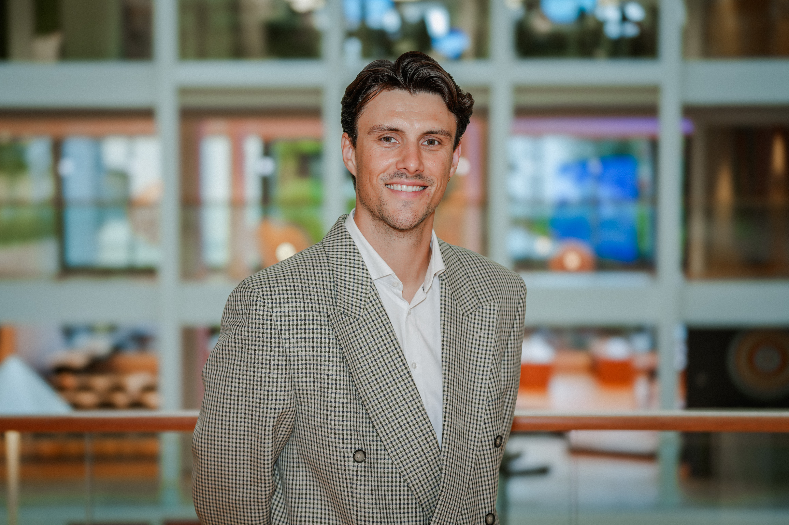

Marketing leader who owns the full funnel — from paid acquisition and performance media to CRM, lifecycle engagement, and retention. I've modernized digital systems in complex enterprise environments at Nordea Wealth Management, scaled a D2C streaming platform from zero to 50K subscribers, and led multi-channel strategies for premium brands across sectors.

Add headshot.jpgHow I built an automated MMM system that revealed 80% of sales were organic — and used that insight to cut cost-per-customer by 20%.
At Strim (a D2C streaming platform), we were spending across TV, social, search, display, and programmatic — but couldn't answer a basic question: what is the real effect of our media spend on short-term sales?
We faced three specific challenges that made this nearly impossible to answer with standard tools.
Cookie lifespans had shrunk to 24 hours in most browsers, making cross-channel customer journeys invisible. "Direct" traffic in Google Analytics kept growing as attribution windows collapsed.
Worse, the platforms wildly disagreed on conversions. In one month, Google Analytics reported 135 sales from Facebook — while Facebook claimed nearly 3,000. For Snapchat, the gap was even larger.
We also couldn't distinguish sales that would have happened anyway from those actually driven by paid media. When a viral football match drove sign-ups, the platforms happily took credit.
We built a fully automated marketing mix modeling system. The architecture was straightforward but the automation was key — traditional MMM takes months and delivers a static report. We needed something we could use weekly.
All data collection was automated via Supermetrics (digital) and direct feeds (offline, sales). BigQuery served as the data hub where everything was normalized. Python ran the modeling. Looker visualized the output into a weekly decision-making dashboard, not a quarterly report.
The model revealed that approximately 80% of trial sign-ups were organic — driven by accumulated brand equity, product quality, word-of-mouth, and seasonal factors. Paid media was responsible for about 20%.
This wasn't alarming — it's consistent with international benchmarks. But it meant our true cost per acquisition was 2–10x higher than what platforms reported. We introduced "iCPO" (incremental CPO) as our north star metric.
"It's not fun to tell stakeholders that paid search has an iCPO of $3,700 instead of $350 — but it's far more honest, and it's what actually lets you optimize."
By reallocating budget toward channels with higher incremental efficiency and away from those riding organic momentum, we reversed a rising CPO trend and achieved a 20% reduction year-over-year.
The dashboard became a weekly decision tool, used jointly by the marketing team and our agency partner to continuously rebalance spend. The key insight: cookie-independent, objective attribution was the only path to real optimization.
Two other roles where I built and led marketing functions with measurable outcomes.
Joined the Wealth Management executive team to own all digital customer journeys end-to-end. Modernized legacy systems and processes in a heavily regulated, complex enterprise environment — rebuilding the lead management pipeline, implementing proper attribution, and integrating performance media with brand-building across channels.
Managed ~$10M in annual paid media for premium brands including Apple and Mercedes-Benz across programmatic, social, search, display, video, and audio. Led creative testing and A/B optimization, presenting strategic recommendations to senior client leadership.
A decade of building growth engines across financial services, streaming, and agency environments.
Hands-on across the modern marketing stack.
More than what fits on a resume.
I grew up in Stavanger, Norway, where I played competitive soccer for Viking FK's youth academy. At 18, I moved to the U.S. on a soccer scholarship to Long Island University, where I became team captain, earned All-American honors, and graduated Summa Cum Laude with a BS in Business Administration before completing my MBA. I also had a stint playing for New York Cosmos B — a brief but formative chapter.
That competitive drive carried into my career. I've always been drawn to environments that demand both creativity and rigor, which is what led me to marketing. Along the way, I've kept challenging myself — including studying Literature at the University of Oslo during the pandemic, purely to broaden my perspective and push into unfamiliar territory.
Outside of work, I serve on the board of the Marketing Organization of Oslo (MFO), a community of senior marketing leaders focused on knowledge-sharing and raising the standard of the profession. It's volunteer work, but it keeps me connected to the broader industry conversation.
Exploring Director and VP-level opportunities in New York. Open to hybrid roles.